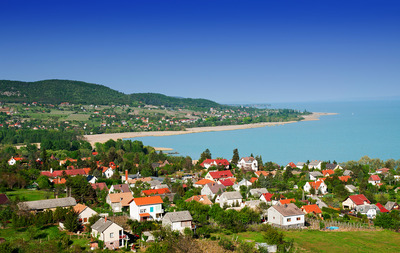
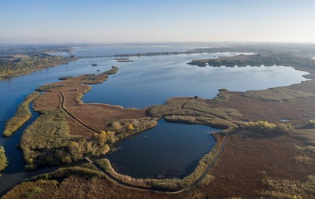
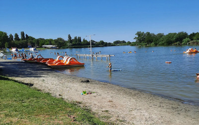

A Balaton egy tó a Dunántúlon, Közép-Európa legnagyobb tava, Magyarország vízrajzának meghatározó eleme. Könnyen felmelegedő, sekély vize kiválóan alkalmassá teszi a fürdésre és sportolásra, élővilága rendkívül gazdag, a táj változatos vulkanikus kúpjaival sok tekintetben egyedi. Típusa geológiailag a Velencei-tóhoz hasonlóan tektonikus eredetű, sekély vizű ároktó. 77 km hosszú, legkisebb szélessége Tihanynál 1,3 km, legnagyobb 12,7 km Balatonvilágos és Balatonalmádi között, átlagos szélessége 7,7 km, felülete 600 km². Legmélyebb pontja a Tihanyi-szoros legmélyebb árkában az úgynevezett a „Tihanyi-kút”, ahol a tó medre 11-12,5 méter mélyen van. Más forrás szerint a kút mélysége 10,67 méter.
A Tisza-tó Magyarország második legnagyobb tava, amelyet a Tisza folyó felduzzasztásával hoztak létre. A tó területe 127 km², átlagos mélysége 1,3 méter, legmélyebb pontja 17 méter. A Tisza-tó gazdag élővilággal rendelkezik, számos madárfaj és halfaj található itt. A tó környéke kedvelt turisztikai célpont, ahol lehetőség van horgászásra, vízi sportokra és kerékpározásra is. A Tisza-tó környéke számos szabadidős tevékenységet kínál, beleértve a madármegfigyelést, a természetjárást és a vízi túrákat. A tó partján több strand és kemping található, amelyek kiváló lehetőséget biztosítanak a pihenésre és a kikapcsolódásra.
A Szelidi-tó egy kisebb tó Magyarországon, amely a Duna-Tisza közén található. A tó területe 0,7 km², átlagos mélysége 2-3 méter. A Szelidi-tó környéke csendes és nyugodt, ideális hely a pihenésre és a természet közelségének élvezetére. A tó vize tiszta és alkalmas fürdésre, a partján pedig több strand és kemping található. A Szelidi-tó környéke számos szabadidős tevékenységet kínál, beleértve a horgászatot, a vízi sportokat és a természetjárást. A tó partján található strandok és kempingek kiváló lehetőséget biztosítanak a pihenésre és a kikapcsolódásra.
